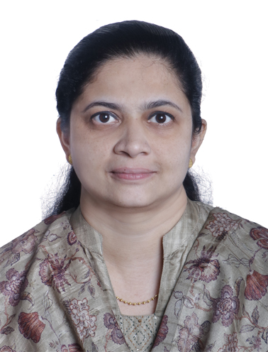

B.Ed.
St. Joseph Training College, Mannanam
Mahatma Gandhi University
Assistant Professor of Mathematics · RSET, Kakkanad
I teach mathematics to engineering students and I am pursuing a PhD in stochastic modeling, with a long-standing interest in graph theory.

I completed my B.Sc. in Mathematics at Alphonsa College, Pala, my M.Sc. in Pure Mathematics at K.E. College, Mannanam, and my B.Ed. at St. Joseph’s Training College, Mannanam. I qualified SET in 2007 and GATE in 2013.
I have 15 years of teaching experience within and outside Kerala, and I have been an Assistant Professor of Mathematics at Rajagiri School of Engineering & Technology, Kakkanad, since 2015. I am currently pursuing a PhD at Government Engineering College, Thrissur, under APJ Abdul Kalam Technological University, Trivandrum.
Kakkanad · Assistant Professor of Mathematics since 2015 · B.Tech
11 yearsKanjirappally · B.Tech, MCA
2 yearsThodupuzha · B.Tech
1 yearAnchal · B.Sc, M.Sc
1 yearAluva · BBA, BCA, MCA
1 yearBangalore · B.Tech
1 semesterThrikkakara · MBA, MCA
1 semesterAnchal · MCA
1 semesterCherpunkal · B.Com
1 semesterSt. Joseph Training College, Mannanam
Mahatma Gandhi University
K.E. College, Mannanam
Mahatma Gandhi University
Alphonsa College, Pala
Mahatma Gandhi University
Alphonsa Institute of Computer Studies, Pala
DOEACC Society, New Delhi
B.K. College, Amalagiri
Mahatma Gandhi University
F.M.E.M.H.S., Piravom
Board of Public Examinations
Government Engineering College, Thrissur
APJ Abdul Kalam Technological University, Trivandrum
A project in graph theory as part of the M.Sc. degree. I later helped organize a national seminar on applications of graph theory.
For academic collaboration, teaching or research enquiries, email is the quickest way to reach me.
Rajagiri School of Engineering & Technology, Kakkanad, Ernakulam, Kerala, India